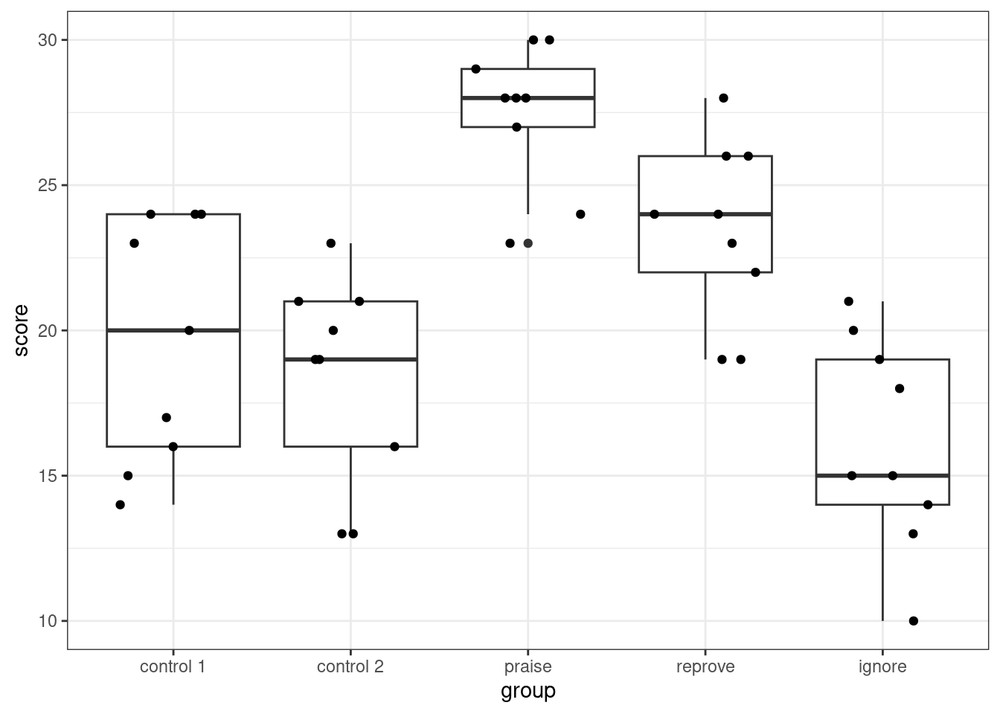

library(hecedsm)library(dplyr) # data manipulationlibrary(knitr) # data formattinglibrary(ggplot2) # grammar of graphicslibrary(emmeans) # marginal means and contrasts# Load arithmetic datadata(arithmetic, package ="hecedsm")# categorical variable = factorstr(arithmetic) # Look up data
Table 1: Summary statistics (mean and standard deviation) of arithmetic scores per experimental group.
group
mean
sd
control 1
19.7
4.21
control 2
18.3
3.57
praise
27.4
2.46
reprove
23.4
3.09
ignore
16.1
3.62
# Boxplot with jittered dataggplot(data = arithmetic,aes(x = group,y = score)) +geom_boxplot() +# box and whiskers plot# scatterplot, with horizontal jitteringgeom_jitter(width =0.3,height =0) +theme_bw()

Figure 1: Box and whisker plot with jittered data of arithmetic exam score per experimental group.
# Analysis of variance model - global test of equality of meansmodel <-lm(score ~ group, data = arithmetic)# Compute mean for each group with pooled standard errormargmeans <-emmeans(model, specs ="group")# Compute pairwise differencescontrast(margmeans,method ="pairwise",adjust ='none',infer =TRUE) |>as_tibble() |># transform to data framefilter(contrast =="praise - reprove") |># extract the sole pairwise difference knitr::kable(digits =3)
Table 2: Pairwise differences for praise vs reprove for the arithmetic data.
contrast
estimate
SE
df
lower.CL
upper.CL
t.ratio
p.value
praise - reprove
4
1.62
40
0.723
7.28
2.47
0.018
# Manual calculation of p-value2*pt(q =2.467, df =45-5, lower.tail =FALSE)
[1] 0.018
# Manual calculation of confidence intervalsdf <- model$df.residual # degrees of freedomsigma <-summary(model)$sigma # standard deviationse_diff <-sqrt(sigma^2/9+ sigma^2/9) # Standard error of difference in mean# Difference between praise and reprove meansdelta <-diff(predict(model, newdata =data.frame(group =c("reprove", "praise"))))(ci <- delta +qt(c(0.025,0.975), df = df) * se_diff)
[1] 0.723 7.277
Source Code
---title: "MATH 80667A - Week 2"author: "Léo Belzile"format: htmleval: trueecho: truemessage: falsewarning: falsecode-tools: source: true toggle: false caption: "Download Quarto file"---```{r}#| echo: falseoptions(scipen =100, digits =3)``````{r}#| label: tbl-summary-stats-arithmetic#| tbl-cap: "Summary statistics (mean and standard deviation) of arithmetic scores per experimental group."library(hecedsm)library(dplyr) # data manipulationlibrary(knitr) # data formattinglibrary(ggplot2) # grammar of graphicslibrary(emmeans) # marginal means and contrasts# Load arithmetic datadata(arithmetic, package ="hecedsm")# categorical variable = factorstr(arithmetic) # Look up data# Compute summary statisticssummary_stat <-arithmetic |>group_by(group) |>summarize(mean =mean(score),sd =sd(score))# Create HTML tableknitr::kable(summary_stat,digits =2)``````{r}#| label: fig-boxplot-arithmetic#| fig-cap: "Box and whisker plot with jittered data of arithmetic exam score per experimental group."# Boxplot with jittered dataggplot(data = arithmetic,aes(x = group,y = score)) +geom_boxplot() +# box and whiskers plot# scatterplot, with horizontal jitteringgeom_jitter(width =0.3,height =0) +theme_bw()``````{r}#| label: tbl-pairwise-diff#| tbl-cap: "Pairwise differences for praise vs reprove for the `arithmetic` data."# Analysis of variance model - global test of equality of meansmodel <-lm(score ~ group, data = arithmetic)# Compute mean for each group with pooled standard errormargmeans <-emmeans(model, specs ="group")# Compute pairwise differencescontrast(margmeans,method ="pairwise",adjust ='none',infer =TRUE) |>as_tibble() |># transform to data framefilter(contrast =="praise - reprove") |># extract the sole pairwise difference knitr::kable(digits =3)``````{r}# Manual calculation of p-value2*pt(q =2.467, df =45-5, lower.tail =FALSE)# Manual calculation of confidence intervalsdf <- model$df.residual # degrees of freedomsigma <-summary(model)$sigma # standard deviationse_diff <-sqrt(sigma^2/9+ sigma^2/9) # Standard error of difference in mean# Difference between praise and reprove meansdelta <-diff(predict(model, newdata =data.frame(group =c("reprove", "praise"))))(ci <- delta +qt(c(0.025,0.975), df = df) * se_diff)```